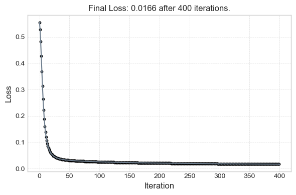
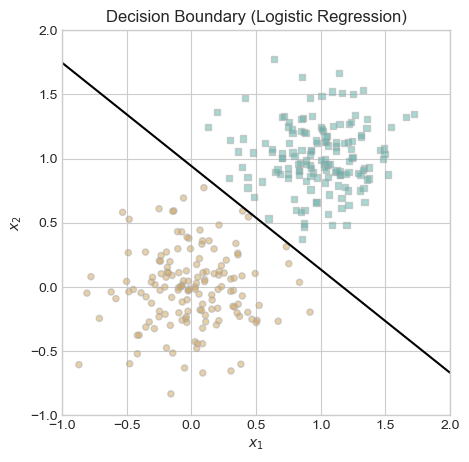
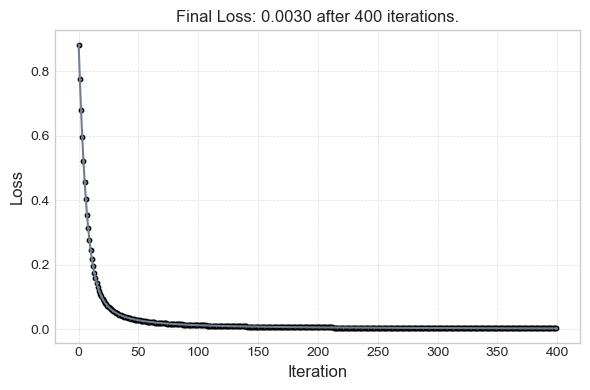
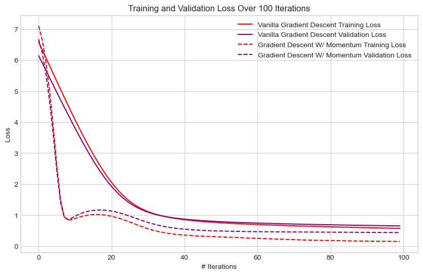

import torch
%load_ext autoreload
%autoreload 2
from logistic import LogisticRegression, GradientDescentOptimizerThe autoreload extension is already loaded. To reload it, use:
%reload_ext autoreloadJiffy Lesica
In this blog post, I implement logistic regression from scratch using PyTorch and apply it to both computer-generated and real-world data. I begin by developing a LogisticRegression class and GradientDescentOptimizer class that supports both vanilla gradient descent and momentum-based updates. Through a series of experiments, I analyzed the relationship of changing learning rates, momentum/beta rates, overfitting, and real-world datasets with the logistic regression algorithm. The experiments include generating 2D data for visualizing decision boundaries, a higher-dimensional overfitting case, and a real-world bot vs. user classification dataset from Kaggle. Each experiment is paired with visualizations and reflections to illustrate key concepts of the blog post.
import torch
%load_ext autoreload
%autoreload 2
from logistic import LogisticRegression, GradientDescentOptimizerThe autoreload extension is already loaded. To reload it, use:
%reload_ext autoreload# Clarifying torch.mean dimensions
X = torch.tensor([
[1.0, 2.0, 3.0],
[1.0, 2.0, 3.0],
[1.0, 2.0, 3.0]
])
print(torch.mean(X, dim = 0)) # Averages all elements in a column
print(torch.mean(X, dim = 1)) # Averages all elements in a rowtensor([1., 2., 3.])
tensor([2., 2., 2.])# Just confirmation that the pyfile contents work properly
X = torch.tensor([
[1.0, 2.0, 1.0],
[2.0, 1.0, 1.0],
[0.0, 3.0, 1.0]
])
y = torch.tensor([0.0, 1.0, 1.0])
model = LogisticRegression()
model.w = torch.tensor([0.1, -0.2, 0.0])
print("Scores:", model.score(X))
print("Loss:", model.loss(X, y))
print("Gradient:", model.grad(X, y))Scores: tensor([-0.3000, 0.0000, -0.6000])
Loss: tensor(0.7617)
Gradient: tensor([-0.1915, -0.5286, -0.2400])# Define functions to create classification data, plot logistic classification data
# and draw a line on classification plot
def classification_data(n_points = 300, noise = 0.2, p_dims = 2):
y = torch.arange(n_points) >= int(n_points/2)
y = 1.0*y
X = y[:, None] + torch.normal(0.0, noise, size = (n_points,p_dims))
X = torch.cat((X, torch.ones((X.shape[0], 1))), 1)
return X, y
def plot_logistic_data(X, y, ax):
assert X.shape[1] == 3, "This function only works for data created with p_dims == 2"
targets = [0, 1]
markers = ["o" , ","]
for i in range(2):
ix = y == targets[i]
ax.scatter(X[ix,0], X[ix,1], s = 20, c = 2*y[ix]-1, facecolors = "none", edgecolors = "darkgrey", cmap = "BrBG", vmin = -2, vmax = 2, alpha = 0.5, marker = markers[i])
ax.set(xlabel = r"$x_1$", ylabel = r"$x_2$")
def draw_line(w, x_min, x_max, ax, **kwargs):
w_ = w.flatten()
x = torch.linspace(x_min, x_max, 101)
y = -(w_[0]*x + w_[2])/w_[1]
l = ax.plot(x, y, **kwargs)
X, y = classification_data(noise = 0.5)This function trains a logistic regression model on a given dataset using gradient descent (with optional momentum) and visualizes the training process. It tracks the logistic loss over 100 iterations and plots the loss curve to illustrate convergence results. If the input data has 2 features (plus a bias term), it also plots the decision boundary over the dataset.
from matplotlib import pyplot as plt
plt.style.use('seaborn-v0_8-whitegrid')
def logistic_loss_and_plot(X, y, alpha=0.1, beta=0.0, max_iters=100):
# Instantiate the model and optimizer
model = LogisticRegression()
model.score(X) # ensure w is initialized
opt = GradientDescentOptimizer(model)
# Track loss over iterations
loss_vec = []
for _ in range(max_iters):
loss = model.loss(X, y)
loss_vec.append(loss.item())
opt.step(X, y, alpha=alpha, beta=beta)
print(f"Final Loss: {loss_vec[-1]:.4f} after {max_iters} iterations.")
# Plot loss per iteration
plt.figure(figsize=(6, 4))
plt.plot(loss_vec, color="slategrey", linewidth=1.5)
plt.scatter(range(len(loss_vec)), loss_vec, color="slategrey", edgecolors="black", s=30)
plt.xlabel("Iteration", fontsize=12)
plt.ylabel("Loss", fontsize=12)
plt.title(f"Final Loss: {loss_vec[-1]:.4f} after {len(loss_vec)} iterations.", fontsize=12)
plt.grid(True, linestyle="--", linewidth=0.5, alpha=0.7)
plt.tight_layout()
plt.show()
# If data is 2D, also plot decision boundary
if X.shape[1] == 3:
fig, ax = plt.subplots(1, 1, figsize=(5, 5))
ax.set(xlim=(-1, 2), ylim=(-1, 2))
plot_logistic_data(X, y, ax)
# Draw logistic decision boundary
draw_line(model.w, -1, 2, ax, color="black")
ax.set_title("Decision Boundary (Logistic Regression)")
plt.show()In this experiment,I generate 2D classification data using the classification_data() function. The data is linearly separable with moderate noise. I train a logistic regression model using vanilla gradient descent and visualize the decision boundary and loss curve over 100 iterations. This aims to show that my logistic regression implementation correctly converges, decreases monotonically, and that a decision boundary can be visualized.
Using the same dataset as Experiment 1, I compare vanilla gradient descent with momentum-based gradient descent. I train each model for the same number of iterations and plot the training loss over time. This aims to show how momentum accelerates convergence and leads to a lower loss being achieved earlier than vanilla gradient descent (as seen above).
Plot for beta = 0.9
Final Loss: 0.1516 after 100 iterations.

To illustrate overfitting, I generate data where the number of features p > n. I train the model on the training set with more features than datapoints until it achieves perfect accuracy, and then evaluate performance on the test set which has more datapoints than features. This experiment aims to show that while a model with a lot of features can lead to good training results, it can produce overfitting. Just because you achieve good loss does not mean you will have good accuracy on test data.
# Fewer data points, more dimensions = overfitting risk
X_train, y_train = classification_data(n_points=30, p_dims=100, noise=0.3)
X_test, y_test = classification_data(n_points=300, p_dims=100, noise=0.3)
# Plot training loss
logistic_loss_and_plot(X_train, y_train, alpha=0.1, beta=0.0)Final Loss: 0.0933 after 100 iterations.
# Recreate model for evaluation - logistic_loss_and_plot doesn't create global models
model = LogisticRegression()
model.score(X_train)
opt = GradientDescentOptimizer(model)
for _ in range(100):
opt.step(X_train, y_train, alpha=0.1, beta=0.0)
train_accuracy = (model.predict(X_train) == y_train)
test_accuracy = (model.predict(X_test) == y_test)
print(f"Train Accuracy: {train_accuracy.float().mean():.4f}")
print(f"Test Accuracy: {test_accuracy.float().mean():.4f}")Train Accuracy: 0.9667
Test Accuracy: 0.8233Notes on data provided on Kaggle
As such, preprocessing should be optimized to only transform/pre-process entries where necessary, with these feature notes kept in mind. In other words, ‘unknown’ entries can be converted to 0 (not removed) and NaNs should be left in place/unchanged.
import pandas as pd
import torch
from sklearn.model_selection import train_test_split
from sklearn.preprocessing import StandardScaler
# Data Loading and Preprocessing
# Load the data
df = pd.read_csv("bots_vs_users.csv")
# Replace 'Unknown' with 0 to indicate missing categorical value
df.replace("Unknown", 0.0, inplace=True)
# The only feature with string entry values is 'city', so we one-hot encode it
# This creates a new column for each unique city value, with binary 0.0/1.0 value
# Since there are only 4 distinct entries for this feature, this operation preferred to factorizing these values
df = pd.get_dummies(df, columns=["city"], dtype=float)
# Now, since we have possibly meaningful NaN values, i choose to replace them with -1
df = df.fillna(-1.0)
# Drop the target column to create X and y
X_df = df.drop("target", axis=1)
# Convert the feature matrix and target column to NumPy array for eventually use with PyTorch
# Include astype(float) to ensure any possible type object entries are made into floats
X_np = X_df.astype(float).values
y = df["target"].values
# Scale the data to make sure all features on same scale
scaler = StandardScaler()
X = scaler.fit_transform(X_np)# Split data into train (60%) and temp (40%) sets (To be turned to test and validation)
"""
I choose to pass stratify = y so that target distribution is maintained
Stratify makes sure that the distribution of entries in a certain column
stays the same in the output data subset. In this case, we want the
distribution of bots and users to be the same. So, for example, say the
original dataset had 50% bots and 50% users, us passing y to stratify
will ensure those proportions are maintained in X_train/y_train and
X_temp/y_temp
"""
X_train, X_temp, y_train, y_temp = train_test_split(
X, y, train_size=0.6, random_state=802, stratify=y
)
# Split temp set evenly into validation (20%) and test (20%)
X_val, X_test, y_val, y_test = train_test_split(
X_temp, y_temp, train_size=0.5, random_state = 802, stratify=y_temp
)
# Convert these to PyTorch Tensors
X_train = torch.tensor(X_train, dtype=torch.float32)
y_train = torch.tensor(y_train, dtype=torch.float32)
X_validation = torch.tensor(X_val, dtype=torch.float32)
y_validation = torch.tensor(y_val, dtype=torch.float32)
X_test = torch.tensor(X_test, dtype=torch.float32)
y_test = torch.tensor(y_test, dtype=torch.float32)def train_model(X_train, y_train, X_val, y_val, alpha=0.1, beta=0.0, num__iterations = 100):
LR = LogisticRegression()
opt = GradientDescentOptimizer(LR)
train_losses = []
val_losses = []
# Perform training iterations
for i in range(num__iterations):
# Since beta activates momentum in step, pass 0.0 unless otherwise indicated in function call
opt.step(X_train, y_train, alpha=alpha, beta=beta)
# Track the loss
# .item() extracts the Python scalar bc loss returns Tensor
train_loss = LR.loss(X_train, y_train).item()
val_loss = LR.loss(X_val, y_val).item()
# Append loss to arrays for plotting
train_losses.append(train_loss)
val_losses.append(val_loss)
return LR, train_losses, val_losses# Each function call below runs a training loop on our training/validation data.
# The first call uses vanilla gradient descent (beta = 0.0)
# The second call uses gradient descent with momentum (0.9)
vanilla_LR, vanilla_train_loss, vanilla_validation_loss = train_model(
X_train, y_train, X_validation, y_validation, alpha=0.05, beta=0.0, num__iterations=100
)
momentum_LR, momentum_train_loss, momentum_validation_loss = train_model(
X_train, y_train, X_validation, y_validation, alpha=0.05, beta=0.9, num__iterations=100
)import matplotlib.pyplot as plt
plt.figure(figsize=(10,6))
# Plot 4 loss combinations
plt.plot(vanilla_train_loss,
label="Vanilla Gradient Descent Training Loss",
linestyle="-",
color = "red")
plt.plot(vanilla_validation_loss,
label="Vanilla Gradient Descent Validation Loss",
linestyle="-",
color = "purple")
plt.plot(momentum_train_loss,
label="Gradient Descent W/ Momentum Training Loss",
linestyle="--",
color = "red")
plt.plot(momentum_validation_loss,
label="Gradient Descent W/ Momentum Validation Loss",
linestyle="--",
color = "purple")
# Give plot a title
plt.title("Training and Validation Loss Over 100 Iterations")
# X-axis title
plt.xlabel("# Iterations")
# y-label
plt.ylabel("Loss")
plt.legend()
plt.grid(True)
plt.show()
vanilla_accuracy, vanilla_loss = test_model(vanilla_LR, X_test, y_test)
momentum_accuracy, momentum_loss = test_model(momentum_LR, X_test, y_test)
print(f"Vanilla Gradient Descent: \nAccuracy = {vanilla_accuracy:.4f}; \nLoss = {vanilla_loss:.2f}\n")
print(f"Gradient Descent W/ Momentum: \nAccuracy = {momentum_accuracy:.4f}; \nLoss = {momentum_loss:.2f}")Vanilla Gradient Descent:
Accuracy = 0.8996;
Loss = 0.63
Gradient Descent W/ Momentum:
Accuracy = 0.9387;
Loss = 0.47Experiment 4 Conclusion: As we can see from the printed results, Vanilla gradient descent produces relatively high classification accuracy, but with a higher loss. This means the vanilla algorithm is less calibrated. As we transition to gradient descent with momentum, we achieve a higher accuracy AND lower loss, suggesting that keeping a record of prior model training steps can help improve future results!
In this blog post, I programmed and tested a from-scratch implementation of logistic regression, which could be used with both vanilla and momentum-based gradient descent. I validated my implementation using low-dimensional generated data, demonstrating the benefits of momentum for faster convergence, and explored the dangers of overfitting in high-dimensional settings. Finally, I applied my model to a real-world bot detection dataset, where momentum again helped achieve strong results. Through this process, I gained a deeper understanding of the mathematical foundations of logistic loss, the practical impact of optimization classes, and the importance of thoughtful preprocessing when working with real data.